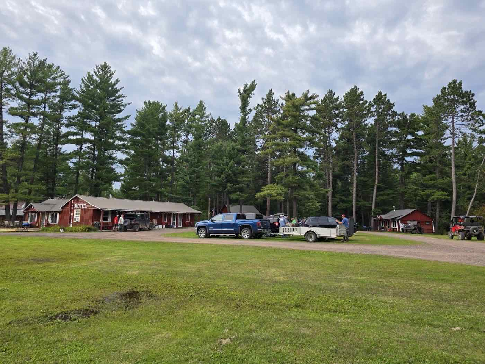

🚘 Ride Michigan's Western U.P. ORV Trails
Ride directly from Two Rivers Motel & Cabins to the SB Route, Ottawa National Forest roads, and hundreds of miles of Western U.P. trails.
Plan Your ORV Adventure
At Two Rivers Motel & Cabins, ORV riding doesn't get any easier. The SB Route runs directly by our property, giving guests easy access to MI-TRALE trails, Ottawa National Forest roads, and scenic backcountry riding throughout Michigan's Western Upper Peninsula. Unload once, gear up, and explore miles of forest roads, trail systems, and scenic destinations right from your cabin or motel room.

🌳 Explore MI-TRALE & Ottawa National Forest Trails
Two Rivers Motel & Cabins is conveniently located near both the MI-TRALE trail system and the Ottawa National Forest, making it a great basecamp for side-by-side, ATV, and ORV adventures.
MI-TRALE Trail System
Over 550+ miles of mapped and signed ATV trails, side-by-side routes, multi-use trails, and scenic forest connectors. Riders can explore small U.P. towns, scenic backroads, and remote areas throughout the region. Trail maps and riding information are available in our office.
Ottawa National Forest ORV Riding
Over 2,300 miles of Forest Service roads and routes open to OHVs and highway legal vehicles — scenic forest roads, waterfall routes, rocky backroads, mud and seasonal terrain, and wildlife viewing. Motor Vehicle Use Maps (MVUMs) help riders identify open routes, seasonal restrictions, and approved roads.
ORV Riding Tips
- Ride with a Buddy — many routes travel through remote forest areas with limited cell service
- Download Maps Offline — GPS and trail map apps are strongly recommended before heading into remote areas
- Respect Public Lands — stay on designated routes and respect trail closures, seasonal restrictions, and private property
- Watch for Changing Conditions — rain, washouts, fallen trees, mud, and weather can quickly impact riding conditions
- Ride Smart & Ride Safe — Ride Right, Lead Right, and always yield to maintenance equipment and larger vehicles
★★★★★“Great place to stay in the UP, especially if you're looking to take advantage of the trail system that is literally 100ft. from the lot...”
❓ ORV FAQs
Can we ride from the property?
Yes — guests can conveniently access the SB Route directly from Two Rivers Motel & Cabins, exploring nearby ORV routes, MI-TRALE trails, and forest roads without needing to trailer every day.
Is there trailer parking available?
Yes — we offer plenty of trailer parking for ORV trailers, side-by-sides, ATVs, and larger riding groups.
What types of ORVs are common in the Western U.P.?
Side-by-Sides (SxS/UTVs), ATVs, dual-sport and adventure motorcycles, and highway legal Jeeps and off-road vehicles.
Do we need an ORV permit in Michigan?
Michigan ORV licenses and trail permits are required for many trail systems and vary by vehicle type, trail system, and road access. Check current Michigan DNR ORV regulations before your trip.
What is the best time of year for ORV riding?
Spring brings muddy trails, waterfalls, and cooler temperatures. Summer offers warmer weather and longer riding days. Fall is popular for scenic riding and colorful forest views.
What is MI-TRALE?
A large ORV trail network in Michigan's Western Upper Peninsula featuring over 550+ miles of mapped and signed routes connecting scenic riding areas, small towns, and forest roads.
Are trail maps available?
Yes — trail maps and local riding information are available in our office. We strongly recommend downloading maps offline before heading into remote areas with limited cell service.
What should we bring on an ORV trip?
Helmets and safety gear, spare clothes and rain gear, drinking water and snacks, GPS or offline trail maps, basic repair tools, tow straps, and first-aid supplies.
Ready to Ride the Trails from Your Front Door?
With direct trail access, scenic riding, rustic cabins, motel rooms, and plenty of trailer parking, it's the perfect basecamp for your next ORV adventure.